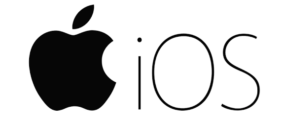
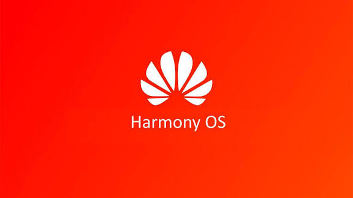
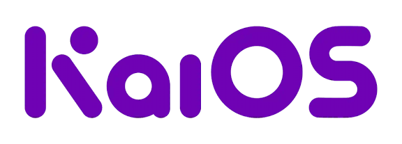

Un sistema operativo móvil (SO móvil) es el software que gestiona el hardware del dispositivo móvil y proporciona servicios y una plataforma para ejecutar aplicaciones. Incluye la gestión de procesos, memoria, interfaces de usuario, controladores de hardware y servicios de seguridad.
Principales sistemas operativos móviles
Android
iOS
HarmonyOS (Huawei)
KaiOS
Otros: Tizen, Sailfish OS (menciones históricas y nicho)
Android
Qué es
Android es un sistema operativo móvil desarrollado por Google, basado en el kernel de Linux y diseñado principalmente para pantallas táctiles como teléfonos y tablets.
Características
Open source (AOSP) con capas propietarias (Google Mobile Services).
Gran ecosistema de aplicaciones (Google Play y tiendas de terceros).
Altamente configurable por fabricantes (OEMs).
Soporte para múltiples arquitecturas de CPU (ARM, x86, RISC-V experimentalmente).
Arquitectura
Linux Kernel: gestión de drivers, seguridad y abstracción de hardware.
Bibliotecas nativas (libc, WebKit, SSL, etc.).
Android Runtime (ART) para ejecutar aplicaciones Java/Kotlin.
Framework de aplicaciones (APIs Java/Kotlin).
Aplicaciones (apps de usuario y del sistema).
Ventajas
Amplia cuota de mercado global y ecosistema de apps.
Flexibilidad y personalización para dispositivos y fabricantes.
Fuerte soporte para desarrolladores y herramientas.
Desventajas
Fragmentación (versiones y personalizaciones por fabricante).
Posibles problemas de seguridad por tiendas/firmwares de terceros.
Actualizaciones dependientes de OEMs y operadores en muchos casos.
iOS
Qué es
iOS es el sistema operativo móvil de Apple para iPhone (y derivaciones para iPad), cerrado y optimizado para hardware Apple con fuerte control de la experiencia y la seguridad.

Características
Plataforma cerrada y controlada por Apple (hardware y software integrados).
Experiencia de usuario consistente y actualizaciones centralizadas.
Enfoque en privacidad y seguridad; App Store controlada.
Arquitectura
Hardware (SoC Apple - CPU, GPU, Secure Enclave).
Kernel XNU (heredado de Darwin/macOS).
Servicios de bajo nivel y frameworks (Core OS, Core Services).
Frameworks de UI (UIKit, SwiftUI) y APIs de alto nivel.
Aplicaciones de usuario y sistema.
Ventajas
Rendimiento y optimización fuertes por control de hardware y software.
Actualizaciones rápidas y homogéneas para los dispositivos soportados.
Elevados estándares de seguridad y calidad de apps en App Store.
Desventajas
Menor flexibilidad para fabricantes y usuarios avanzados.
Menor personalización y ecosistema más cerrado.
Dependencia del hardware de Apple (coste y disponibilidad).
HarmonyOS
Qué es
HarmonyOS (Hongmeng) es el sistema operativo de Huawei orientado a un ecosistema de dispositivos conectados (smartphones, televisores, IoT). Está diseñado para funcionar en varios tipos de hardware y enfatizar la integración del ecosistema.

Características
Enfoque en ecosistema: integración entre dispositivos y distribución de tareas.
Arquitectura basada en microkernel para mejorar seguridad y modularidad (en ciertas versiones).
Compatibilidad con aplicaciones Android en muchos dispositivos (mediante capas de compatibilidad).
Arquitectura (resumen)
Microkernel (enfocado a seguridad y comunicación entre dispositivos).
Módulos y servicios distribuidos (para IoT y dispositivos heterogéneos).
Motor de ejecución para apps y capas de compatibilidad Android cuando aplica.
Ventajas
Diseñado para alto grado de integración entre dispositivos (ecosistema).
Mejoras de seguridad potenciales por microkernel.
Posibilidad de optimizar en hardware Huawei y servicios propios.
Desventajas
Ecosistema global y base de desarrolladores más limitado fuera de China.
Compatibilidad de apps y madurez comparada con Android/iOS varía según región.
KaiOS
Qué es
KaiOS es un sistema operativo ligero basado en Linux diseñado para feature phones y dispositivos con recursos limitados, que soporta aplicaciones web (HTML/CSS/JS) y conectividad esencial (4G, GPS, Wi-Fi).

Características
Orientado a dispositivos con memoria y potencia limitadas.
Permite apps web (KaiStore) e incluye apps populares adaptadas (WhatsApp, YouTube, etc.).
Optimizado para larga duración de batería y bajo coste de hardware.
Arquitectura (resumen)
Linux ligero en el núcleo.
Capas que permiten ejecución de aplicaciones web sobre motores como Gecko o WebView ligero.
Servicios y APIs adaptadas a feature phones (llamadas, SMS, conectividad).
Ventajas
Permite acceso a internet y apps en dispositivos muy económicos.
Menor consumo de recursos y buena duración de batería.
Importante adopción en mercados emergentes.
Desventajas
Capacidades limitadas frente a smartphones completos (multitarea y rendimiento).
Menor ecosistema de apps comparado con Android/iOS.
Otros sistemas (mención)
Tizen y Sailfish OS son ejemplos de sistemas alternativos; Tizen se ha usado en wearables y televisores de Samsung, mientras que Sailfish sirve a nichos y entusiastas. Históricamente hubo intentos como Windows Phone que no lograron mantener cuota de mercado.